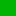

<!doctype html>
<html lang="en">
    <head>
        <meta charset="utf-8">
        <meta http-equiv="X-UA-Compatible" content="IE=edge">
        <meta name="viewport" content="initial-scale=1,user-scalable=no,maximum-scale=1,width=device-width">
        <meta name="mobile-web-app-capable" content="yes">
        <meta name="apple-mobile-web-app-capable" content="yes">
        <link rel="stylesheet" href="css/leaflet.css"><link rel="stylesheet" href="css/L.Control.Locate.min.css">
        <link rel="stylesheet" href="css/qgis2web.css"><link rel="stylesheet" href="css/fontawesome-all.min.css">
        <link rel="stylesheet" href="css/leaflet-control-geocoder.Geocoder.css">
        <style>
        html, body, #map {
            width: 100%;
            height: 100%;
            padding: 0;
            margin: 0;
        }
        </style>
        <title></title>
    </head>
    <body>
        <div id="map">
        </div>
        <script src="js/qgis2web_expressions.js"></script>
        <script src="js/leaflet.js"></script><script src="js/L.Control.Locate.min.js"></script>
        <script src="js/leaflet.rotatedMarker.js"></script>
        <script src="js/leaflet.pattern.js"></script>
        <script src="js/leaflet-hash.js"></script>
        <script src="js/Autolinker.min.js"></script>
        <script src="js/rbush.min.js"></script>
        <script src="js/labelgun.min.js"></script>
        <script src="js/labels.js"></script>
        <script src="js/leaflet-control-geocoder.Geocoder.js"></script>
        <script src="data/KerawananLongsor_1.js"></script>
        <script src="data/Batas_RW_2.js"></script>
        <script>
        var map = L.map('map', {
            zoomControl:true, maxZoom:25, minZoom:15
        }).fitBounds([[-7.082126919481971,110.42541027180438],[-7.04481900608335,110.494824514522]]);
        var hash = new L.Hash(map);
        map.attributionControl.setPrefix('<a href="https://github.com/tomchadwin/qgis2web" target="_blank">qgis2web</a> &middot; <a href="https://leafletjs.com" title="A JS library for interactive maps">Leaflet</a> &middot; <a href="https://qgis.org">QGIS</a>');
        var autolinker = new Autolinker({truncate: {length: 30, location: 'smart'}});
        L.control.locate({locateOptions: {maxZoom: 19}}).addTo(map);
        var bounds_group = new L.featureGroup([]);
        function setBounds() {
        }
        map.createPane('pane_OpenStreetMap_0');
        map.getPane('pane_OpenStreetMap_0').style.zIndex = 400;
        var layer_OpenStreetMap_0 = L.tileLayer('https://tile.openstreetmap.org/{z}/{x}/{y}.png', {
            pane: 'pane_OpenStreetMap_0',
            opacity: 1.0,
            attribution: '',
            minZoom: 15,
            maxZoom: 25,
            minNativeZoom: 0,
            maxNativeZoom: 19
        });
        layer_OpenStreetMap_0;
        map.addLayer(layer_OpenStreetMap_0);
        function pop_KerawananLongsor_1(feature, layer) {
            var popupContent = '<table>\
                    <tr>\
                        <td colspan="2">' + (feature.properties['Ket'] !== null ? autolinker.link(feature.properties['Ket'].toLocaleString()) : '') + '</td>\
                    </tr>\
                </table>';
            layer.bindPopup(popupContent, {maxHeight: 400});
        }

        function style_KerawananLongsor_1_0(feature) {
            switch(String(feature.properties['Ket'])) {
                case 'Rendah':
                    return {
                pane: 'pane_KerawananLongsor_1',
                stroke: false, 
                fill: true,
                fillOpacity: 1,
                fillColor: 'rgba(0,179,0,1.0)',
                interactive: true,
            }
                    break;
                case 'Sedang':
                    return {
                pane: 'pane_KerawananLongsor_1',
                stroke: false, 
                fill: true,
                fillOpacity: 1,
                fillColor: 'rgba(252,172,7,1.0)',
                interactive: true,
            }
                    break;
                case 'Tinggi':
                    return {
                pane: 'pane_KerawananLongsor_1',
                stroke: false, 
                fill: true,
                fillOpacity: 1,
                fillColor: 'rgba(235,54,42,1.0)',
                interactive: true,
            }
                    break;
            }
        }
        map.createPane('pane_KerawananLongsor_1');
        map.getPane('pane_KerawananLongsor_1').style.zIndex = 401;
        map.getPane('pane_KerawananLongsor_1').style['mix-blend-mode'] = 'normal';
        var layer_KerawananLongsor_1 = new L.geoJson(json_KerawananLongsor_1, {
            attribution: '',
            interactive: true,
            dataVar: 'json_KerawananLongsor_1',
            layerName: 'layer_KerawananLongsor_1',
            pane: 'pane_KerawananLongsor_1',
            onEachFeature: pop_KerawananLongsor_1,
            style: style_KerawananLongsor_1_0,
        });
        bounds_group.addLayer(layer_KerawananLongsor_1);
        map.addLayer(layer_KerawananLongsor_1);
        function pop_Batas_RW_2(feature, layer) {
            var popupContent = '<table>\
                    <tr>\
                        <td colspan="2">' + (feature.properties['Id'] !== null ? autolinker.link(feature.properties['Id'].toLocaleString()) : '') + '</td>\
                    </tr>\
                    <tr>\
                        <td colspan="2">' + (feature.properties['Batas_RW'] !== null ? autolinker.link(feature.properties['Batas_RW'].toLocaleString()) : '') + '</td>\
                    </tr>\
                </table>';
            layer.bindPopup(popupContent, {maxHeight: 400});
        }

        function style_Batas_RW_2_0() {
            return {
                pane: 'pane_Batas_RW_2',
                opacity: 1,
                color: 'rgba(35,35,35,1.0)',
                dashArray: '',
                lineCap: 'butt',
                lineJoin: 'miter',
                weight: 1.0, 
                fillOpacity: 0,
                interactive: true,
            }
        }
        map.createPane('pane_Batas_RW_2');
        map.getPane('pane_Batas_RW_2').style.zIndex = 402;
        map.getPane('pane_Batas_RW_2').style['mix-blend-mode'] = 'normal';
        var layer_Batas_RW_2 = new L.geoJson(json_Batas_RW_2, {
            attribution: '',
            interactive: true,
            dataVar: 'json_Batas_RW_2',
            layerName: 'layer_Batas_RW_2',
            pane: 'pane_Batas_RW_2',
            onEachFeature: pop_Batas_RW_2,
            style: style_Batas_RW_2_0,
        });
        bounds_group.addLayer(layer_Batas_RW_2);
        map.addLayer(layer_Batas_RW_2);
        var osmGeocoder = new L.Control.Geocoder({
            collapsed: true,
            position: 'topleft',
            text: 'Search',
            title: 'Testing'
        }).addTo(map);
        document.getElementsByClassName('leaflet-control-geocoder-icon')[0]
        .className += ' fa fa-search';
        document.getElementsByClassName('leaflet-control-geocoder-icon')[0]
        .title += 'Search for a place';
        var baseMaps = {};
        L.control.layers(baseMaps,{' Batas_RW': layer_Batas_RW_2,'Kerawanan Longsor<br /><table><tr><td style="text-align: center;"></td><td>Rendah</td></tr><tr><td style="text-align: center;"></td><td>Sedang</td></tr><tr><td style="text-align: center;"></td><td>Tinggi</td></tr></table>': layer_KerawananLongsor_1,"OpenStreetMap": layer_OpenStreetMap_0,},{collapsed:false}).addTo(map);
        setBounds();
        var i = 0;
        layer_Batas_RW_2.eachLayer(function(layer) {
            var context = {
                feature: layer.feature,
                variables: {}
            };
            layer.bindTooltip((layer.feature.properties['Batas_RW'] !== null?String('<div style="color: #000000; font-size: 10pt; font-weight: bold; font-family: \'Cambria\', sans-serif;">' + layer.feature.properties['Batas_RW']) + '</div>':''), {permanent: true, offset: [-0, -16], className: 'css_Batas_RW_2'});
            labels.push(layer);
            totalMarkers += 1;
              layer.added = true;
              addLabel(layer, i);
              i++;
        });
        resetLabels([layer_Batas_RW_2]);
        map.on("zoomend", function(){
            resetLabels([layer_Batas_RW_2]);
        });
        map.on("layeradd", function(){
            resetLabels([layer_Batas_RW_2]);
        });
        map.on("layerremove", function(){
            resetLabels([layer_Batas_RW_2]);
        });
        </script>
    </body>
</html>
